The TUI¶
The terminal UI and the command-line client are one program named msks.
The TUI uses the same REST API as the CLI commands, with the same environment variables, config file, and daemon aliases. It reads no daemon state directly. Every page uses the API.
A bare msks (no arguments at all) launches the TUI. The default page is a
full-screen workspace tree. msks tui is the same command, and msks tui
my-workspace opens that workspace's page directly.
The workspace tree¶
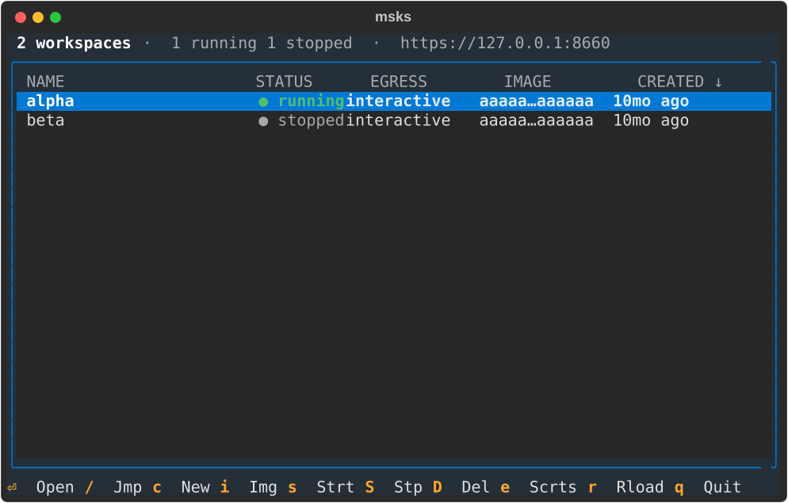
The tree is rooted at the workspaces list: one row per workspace, newest first. Clicking a column header sorts the list by that column. The active column's header shows the direction with an arrow, and clicking it again flips the direction. The CREATED column sorts by creation date. The STATUS column sorts in the lifecycle order (created, starting, running, paused, stopping, stopped, absent, unknown). Every other column sorts by its text.
The list's keys: c creates a workspace, s starts it, S stops it, D
removes it (after a confirmation), e opens the secrets page, and r
refreshes. / jumps to the first workspace whose name starts with what
you type. Enter opens the workspace's page.
Every page answers ? with a key overlay: the page's bindings,
hidden ones included, each with its label. Any key closes the
overlay. The workspaces list answers it too.
The list re-reads the daemon every five seconds. A workspace changed from another surface (the CLI, another operator) appears without a keypress.
The listing's bottom holds a two-line strip with the focused
workspace's quick facts, under the rows. The first line carries the
workspace's name, its id, and the image. The second carries the cpu
count, the memory in binary units (8G), the egress mode, the
mounts-issue count while any mount skips (mounts ✗2), and the
storage the workspace charges the state disk. The strip paints its labels muted and its values in the bright
foreground on the panel background, so it reads as its own bar at the
bottom of the box. The storage figure is the root-plus-home cost msks
storage reports, fetched with the list's five-second refresh and
cached between refreshes. The strip follows the selection without a
keypress, and an empty list hides it.
The status bar above the list counts the workspaces and summarizes
their states beside the count. A fleet in one state reads
4 workspaces · all stopped. Mixed states read each state's count,
as in 4 workspaces · 1 running 3 stopped, in the STATUS column's
lifecycle order. The summary follows the five-second refresh. The
daemon's URL comes last, and it crops first when the terminal runs
narrow.
When the daemon's version and the client's differ, the status line
carries a marker after the URL naming both versions in the warning
color, as in msksd 1.2.3 ≠ client 1.2.4. The marker follows the
five-second refresh and leaves when the versions agree. A /health
connection that fails leaves the standing marker in place. The URL and the
state summary crop before the marker does, so the marker stays
readable at 80 columns.
A row can carry two markers ahead of its status word. ✗1 counts
the workspace's mounts that skipped at the last start (the mounts
chapter lists every kind of skip). »2 counts the workspace's open
shells on this host. The open shells section
below owns the count's whole story; the workspace's page carries the
count in its header. Both markers follow the five-second refresh.
Open shells and the session records¶
Every interactive msks ssh writes one small record under the msks
state directory. That includes a window the tree opened and a
session you typed yourself. The default location is
~/.local/state/msks/sessions; XDG_STATE_HOME moves it, and the
state_dir config key (its variable is MSKSC_STATE_DIR) names the
root outright. The record carries the workspace's id, the session
process's pid, and a short token. The session rewrites its record
every five seconds while it lives and unlinks it when it exits.
The count you read is the host's truthful shell count. It survives a
tree restart, because the records live on disk and the sessions keep
rewriting them. A --hold window whose ssh child exited stops
counting at once. A session killed without cleanup stops counting
once its heartbeat passes the fifteen-second stale TTL and the
listing's next refresh reads the tree, about twenty seconds in the
worst case. A passthrough remote command (msks ssh <ws> -- <cmd>)
and msks rsync write nothing: they are connections, not shells.
The count is per-host. It names the shells open on the host the TUI runs on, whatever host the daemon runs on. The daemon is not involved: the TUI reads the records on its refresh cadence and sweeps the stale ones away. A session whose record cannot be written (a read-only state directory, say) runs fine; the count simply does not see it.
Each record's token is five characters, drawn against the
workspace's live sessions. The token completes the window's title
(msks tree-vm f8x2n); a later release will use it to match a
session to its window.
Workspace creation¶
When you create a workspace, it looks like this:
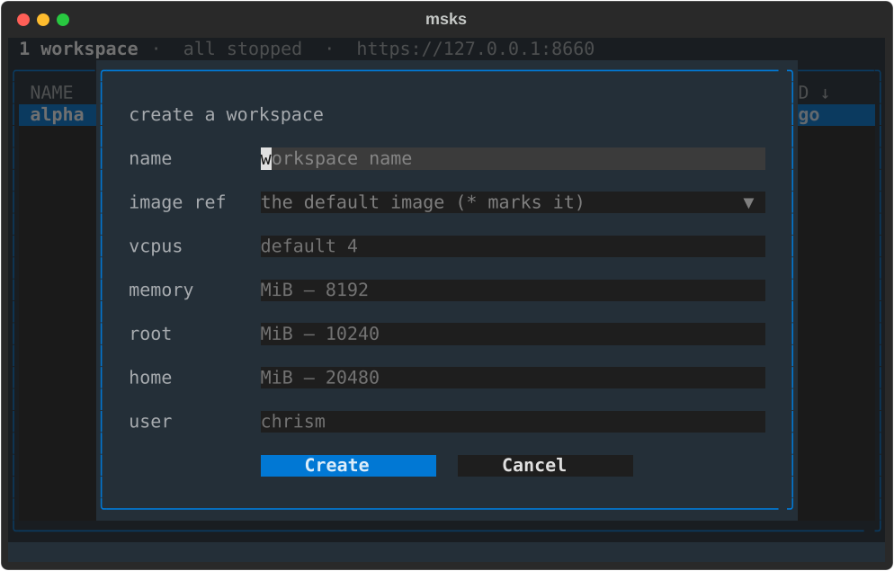
The only required field is name. You may need to import an
image before you can successfully
create a workspace. There are Debian, Fedora, and NixOS images available for
import. You can also build your own.
You can change vcpus, memory, root, and home values after a workspace
is created. The rest are fixed for the lifetime of the workspace.
The secrets page¶
You can register secret placeholders to use in workspaces instead of putting actual secrets into VMs. These secrets are kept in an encrypted store, and placeholders within HTTP headers bound for external sites are swapped on the wire sent to actual secret values. The secrets chapter explains this in detail.
The secrets page lists every placeholder the daemon holds, in columns:
coverage (* for the daemon-wide row, otherwise its workspace ids), name,
destinations, remaining lifetime, and created date.
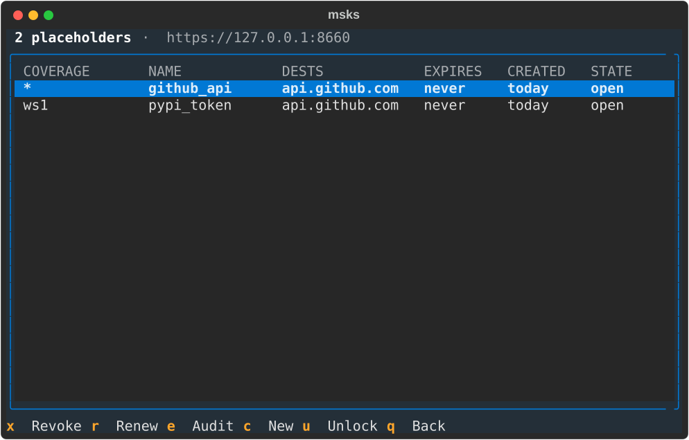
The lifetime cell is a live countdown (2h, then 1h), repainted every
second. An unbounded row reads never. x revokes the focused row after a
confirmation that explains what a revoke does: the row retires everywhere at
once. r opens the duration picker with TTL-appropriate choices, an hour to
thirty days. The choice nearest the row's remaining lifetime is highlighted.
Picking one extends the row in place.
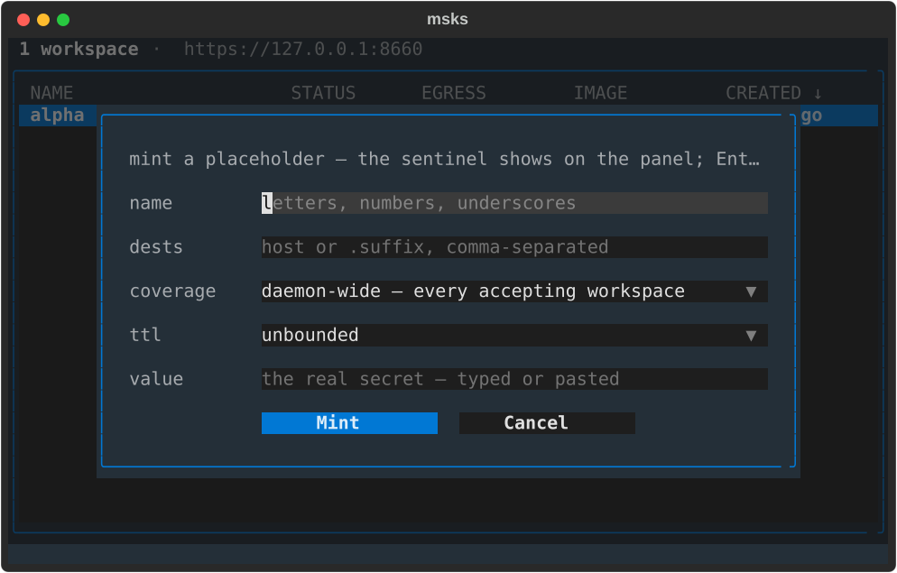
c opens the mint form. The name field comes first, then repeatable
destinations: an exact host or a label-anchored suffix, comma-separated
in one field. Coverage follows: the daemon-wide row, or a multi-select
fed by the tree's workspace list.
The lifetime field offers unbounded by default, with an hour to thirty days
beside it. Submit checks the secret store first for dupes, then mints.
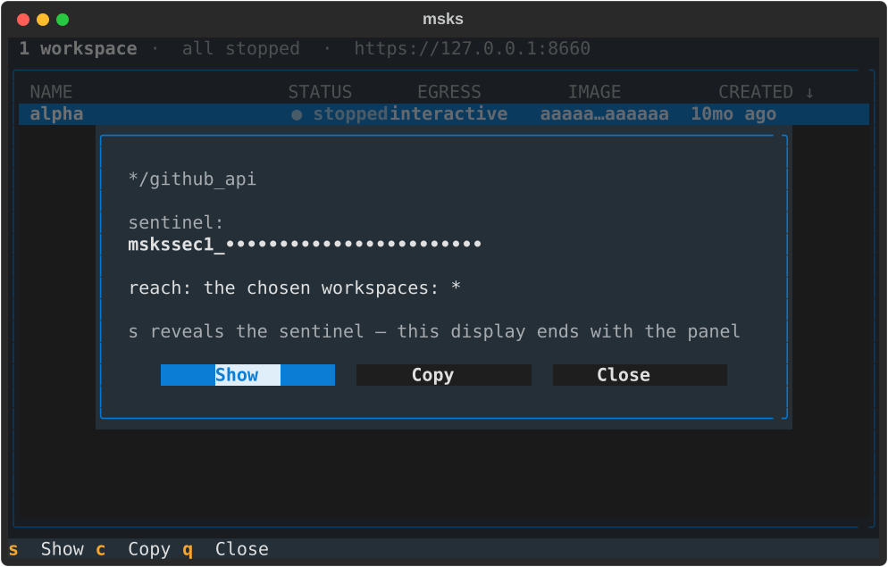
A successful mint replaces the form with the sentinel's panel. The sentinel
opens masked: the prefix shows its reach (mskssec1_ is scoped to the
chosen workspaces, mskssec2_ goes to every accepting workspace), and the
body renders as bullets. s shows and hides it again. c copies the
sentinel to the terminal's clipboard over OSC 52. A terminal that honors the
sequence answers the copy (over ssh included, with no reveal needed).
The display ends with the panel: closing it clears its text, and the minted row stays in the page's list. Enter (or a click) on a listing row opens the panel again. The page fetches the row's sentinel from the daemon and shows it with the same show and copy actions. The sentinel therefore reads back on demand, both at mint time and after.
The workspace page¶
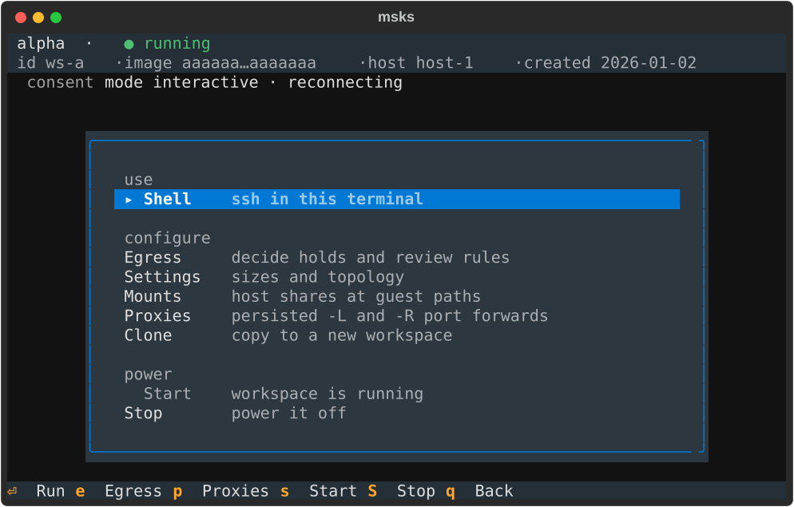
The workspace page operates on an already-created workspace. Its
two-line header: the workspace's name on the first line with its status
beside it, in the state's color, then the id, image, host, and
created date on the second. While shells are open on this host, the
first line carries their count after the status (alpha · ● running ·
2 shells open); the segment leaves with the last shell's close. The
count comes from the session records
and follows the page's per-second row refresh.
Below the header, two status lines share one shape: a muted label,
then the value. The consent line shows the mode and one granted
scope with its expiry. Two or more grants show as a count with the
nearest expiry (5 grants · next expires 4h). Grant details are
listed on the workspace's egress consent screen.
When the workspace mounts host shares, a mounts line follows the same shape.
It carries one entry per mount (projects:/mnt/projects:rw), a skipped
mount's kind beside its spec (refs:/srv/refs:ro · skipped), and an
applies at next start note while a change is pending.
When the workspace holds proxies, a proxies line follows the mounts line. It carries one port pair per proxy, the forwards before a bar and the remotes after it:
Each pair reads listen -> target (or <- for a remote). A listening
pair shows green, a pair whose bind refused shows red, and a pair on a
stopped workspace shows the line's own color. The line refetches on every
proxy transition the daemon publishes, so it moves without a keypress.
The page's fixed actions sit in three groups — use, configure, and
power. The configure group holds the egress consent screen, the
sizes-and-topology edit dialog, the mounts editor, the proxies page,
and Clone:
the full-fork copy of the cloning chapter, taken
with a name prompt. The daemon owns the stopped-source rule — a
refusal names itself on the page's consent line. The p key opens
the proxies page from the workspace page.
The mounts page¶
The mounts editor shows the workspace's mounts one row each, in the
CLI's HOST_PATH:GUEST_PATH:MODE grammar with the mode always shown.
a adds a row (a single-line input), Enter edits the focused row
(seeded with its current spec), D removes it, and Escape closes the
editor with the last saved set.
Every change posts the whole list to the daemon's mounts route. The reply
repaints each row with its derived state (healthy, or the skip's kind and
reason). A refusal appears on the editor's note line, and the refused list
is rolled back.
The daemon owns the rules: a host path outside the allowed roots, or one
under a root the daemon's VM does not mount, is refused with the remedy
stated. The mounts chapter and the configuration
rows describe the behavior. The CLI's msks
mount uses the same route.
The proxies page¶
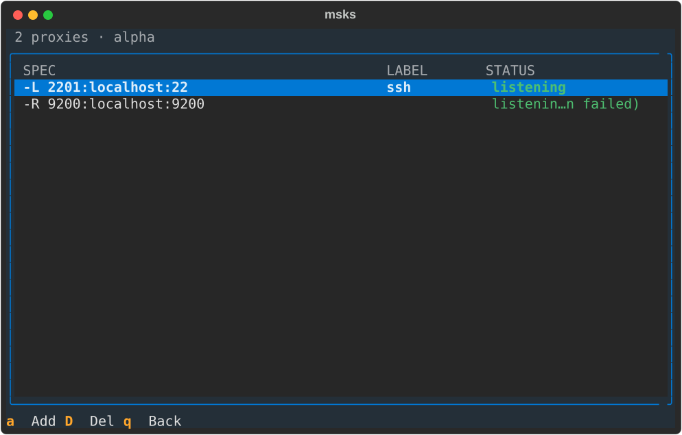
Each workspace owns its proxies page: the workspace's page opens it
with its action row or p. The page manages that workspace's
persisted proxies (the proxies chapter describes what a
proxy is) and no other's. The rows carry the spec in the CLI's
own grammar (-L 2201:localhost:22), the label, and the live status —
a row the guest cannot reach names its reason beside the word.
The page re-reads the listing every five seconds and on every proxy transition the daemon publishes, so a bind that fails while the page stands paints itself without a keypress.
a opens the add form: the workspace (the page's own, shown as its
name), the direction (forward (-L) or reverse (-R)), the spec in
the same grammar msks proxy add reads, and a label. A spec the CLI's own parser refuses keeps the
form standing with the rule on its note line — a -L spec naming a
host besides the workspace itself says so and points at -R. D or
Enter removes the focused row after a confirmation; the listener
closes at once. q or Escape returns to the workspace page.
The images page¶
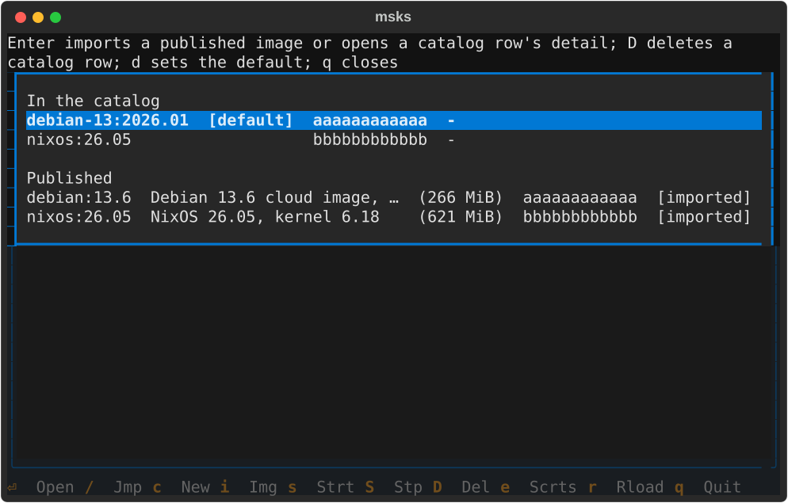
i: the images page — a full page with its key bindings on the
footer row. The catalog group comes first, with the default
marker, each row's hash prefix, and each import's date. Then the
published channel's rows follow, with their descriptions, sizes,
hash prefixes, and membership markers.
The published group lists only the rows this daemon's machine can boot: a
row that declares another architecture stays off the page. A row that
declares none is shown (msks image import follows the same rule).
[imported] marks a row whose archive the catalog holds by exact hash
match; [local] marks a row the catalog holds under a
different hash.
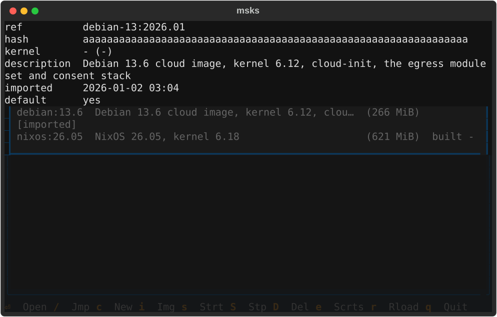
Enter imports a published row through the daemon's URL import or opens a catalog row's detail.
D deletes a catalog row after a confirmation, the same DELETE msks
image rm makes. d designates the highlighted catalog row the default
image, the same POST msks image default makes; the row that already
holds the designation flashes so. Both groups show the build's hash
prefix beside the ref, so a published row matches its catalog row by
eye — the same prefix msks image ls prints. The page re-reads the
workspace each second, so the
dimming follows a start or stop made anywhere, not only on the page.
The egress consent page¶
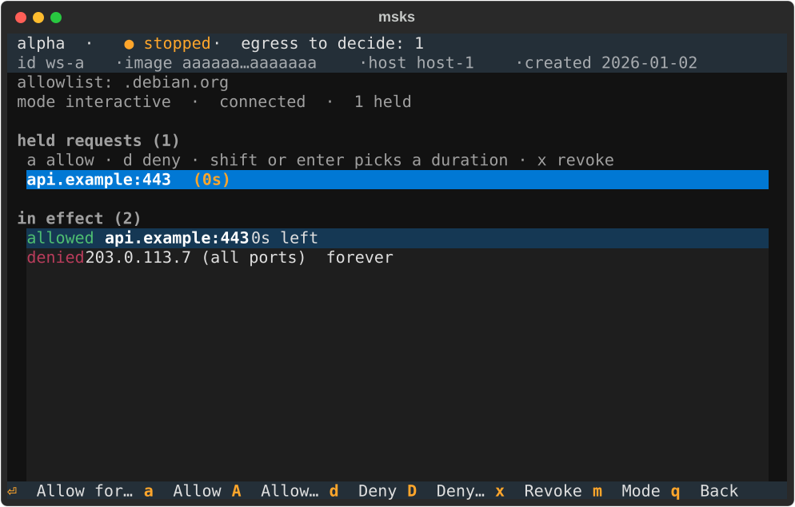
The page's Egress action and its e key open the egress consent
page: a full-screen view that holds the held-request queue and the
in-effect verdicts together. It is the consent decider as a page inside
the tree, and the only place verdicts are made.
The page carries the same two-line header as the workspace page beneath it: the workspace's name with its status (and the pending-hold count while any hold waits), then the id, image hash, host, and created date, muted. The workspace's identity stays visible while verdicts are made.
Keys on the page: the arrows navigate the held requests and cross into the
verdict rows beneath (and back). a/d allow or deny the focused hold for
the default duration (tilrestart); A/D pick a duration first (once /
5m / 15m / tilrestart / forever). The letters act on the holds alone: a
press aimed at the wrong zone reports which zone it would act on, instead of
deciding silently. x revokes the focused verdict. The row leaves on the
daemon's refreshed frame, never optimistically.
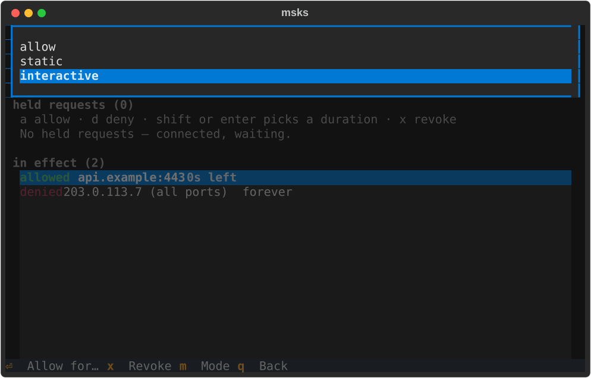
m opens the mode picker (allow / static / interactive, the
current mode highlighted). Picking a mode switches it
through the same endpoint msks egress mode uses, without leaving the
page. The status line shows the new mode once the switch takes effect.
Picking static while nothing is effectively allowed asks the same
offline-workspace confirmation the CLI asks: confirm to switch, decline
to change nothing. A refused switch states its reason on the status
line.
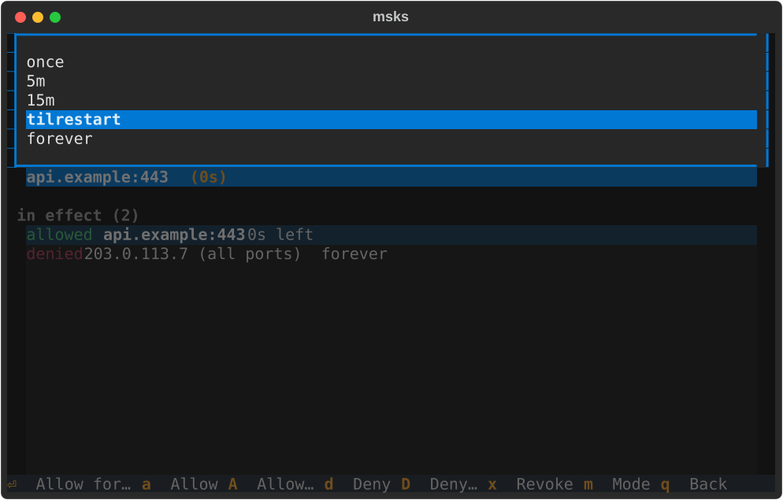
Enter on a focused hold opens the duration picker: the key answers, the
pick decides, and only an explicit letter or a picked duration ever
decides. While no hold waits, the verdict keys do nothing and leave the
footer until one arrives. See msks egress for
what verdicts and rules cover.
The edit page¶
The page's Edit settings action opens the edit dialog: the create form's layout, seeded with the workspace's current values.
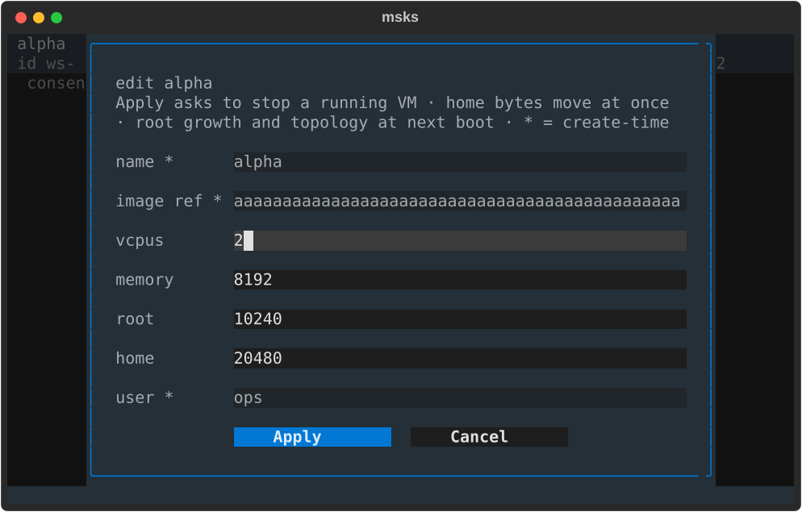
The sizes and topology (root, home, vcpus, memory) are editable. Submit
sends the changed values to the same endpoint msks resize uses, and
the page's consent line shows the same outcome the CLI prints,
including changes that wait for the next boot.
A workspace that is running when you press Apply asks first: confirm and the page stops the workspace, then applies the resize. Decline, and the workspace keeps running with its sizes unchanged. Home size changes apply immediately. Root growth and the new topology apply at the next boot.
A resize the daemon still refuses (a root shrink, among others)
states its reason on the consent line. The name, image, and user fields
show their current values read-only, marked * as create-time:
changing them is a delete-and-recreate, and the dialog refuses a
changed value with a note pointing at the field, instead of accepting
it silently. A size left blank keeps its current value. Escape closes
the dialog and changes nothing.
Opening a shell¶
By default, the page's Open a shell action runs msks ssh in the TUI's own
terminal: the tree exits, the ssh session runs where it stood, and the tree
restarts when the session returns the terminal. Configure msks to open
shells in new windows using terminal_open_cmd, documented below.
A workspace that ssh cannot reach (no NIC, no identity configured) takes a
longer path. The flow boots a stopped workspace first and probes the forward. A
probe that reports a refusal opens no session: the tree's first flash leads
with a suggestion to use msks console as a fallback and follows with the
refusal's first line. The row ellipsizes at its end, so the suggestion stays
visible. The full refusal text is logged before the tree restarts.
A host that wants shells in windows beside the running tree configures a
terminal launcher (terminal_open_cmd below). The action then spawns the
launcher with a msks ssh invocation appended. The spawned shell inherits the
tree's resolved connection, so it reaches the same daemon. A launcher that
cannot start (a missing binary, one without the execute bit) reports the reason
on the tree's first flash, exits to the workspace page.
Every screen is navigable with arrow keys. Lists move with up/down, the
create form's fields move with up/down between them, and Escape leaves the
screen it is on. q backs out of a page. At the workspaces list, Escape
quits the tree. Ctrl+Q exits the client from any screen (the tree, a page, a
form field, or a panel stacked over them), the same clean exit q takes at
the workspaces list.
The shell action's terminal settings¶
The workspace page's Open a shell action runs msks ssh: in the TUI's
own terminal by default, or in a new window through a configured launcher.
Two client settings shape those windows. Their environment-variable rows are
in the client environment table. Their file
keys are documented here.
terminal_open_cmd¶
terminal_open_cmd is the launcher the workspace page's Open a shell
action uses to open workspace shells in new terminal windows. It is the opt-in
for hosts that want windows beside the running tree isntead of within. The msks
invocation is appended after it, the way most terminals take a command after
-e / --:
terminal_open_cmd: konsole --hold -e # string form (shell-split)
terminal_open_cmd: # Linux (list form, no shell quoting)
- ghostty
- +wait
- -e
terminal_open_cmd: # macOS (open launches Ghostty.app)
- open
- -na
- Ghostty.app
- --args
- -e
Any terminal is supported, but let's explain the options to the Ghostty
terminal examples anove. On Linux, Ghostty's -e takes the appended
invocation as the window's command, and +wait holds the ghostty process until
the window closes — the same hold konsole -e gives. On macOS the ghostty
CLI is a helper tool; open -n starts a new Ghostty.app instance and --args
hands it the -e. A window opened through open runs with a fresh login
environment: nothing from the shell the TUI runs in passes through. The
appended client therefore locates its packages and its daemon on its own.
terminal_open_cmd's environment form (MSKSC_TERMINAL_OPEN_CMD) overrides
the file value with the string form. Unset (the default), the shell action
runs msks ssh in the TUI's own terminal, on every host, with no terminal
to launch. A configured launcher that fails to execute (a binary that is
missing or not executable) reports the reason on the tree's first flash
after the same-terminal shell ends. The shell runs in the same terminal.
The window title¶
Every terminal window msks opens for a workspace shell carries one
title: msks {workspace} {session}. The workspace half is the
workspace's name — the word the operator reads everywhere else —
with its id standing in when the daemon serves no name. The session
half is the token of the session record the open shells
section describes:
msks tree-vm f8x2n. A child that names no workspace (an appended
command that is not an msks ssh) titles as msks shell.
A session without a record drops the session half. The consent
launcher (msks-term-popup) titles its window before any session
exists, and a remote-command run in a spawned window registers
nothing, so both read msks tree-vm. The plain window the TUI
opens takes the full title from the appended msks ssh itself: the
window is marked at spawn, and the command names it twice. The first
write carries the typed reference alone, before the boot pre-flight
— a refused pre-flight still leaves the window named. The second
write carries the resolved name and completes the title with the
record's token, once the pre-flight answers and the session
registers. The title stays until something
inside the window replaces it: a workspace that sets its own title
from inside the session (a PROMPT_COMMAND with a title escape, the
way stock ssh sessions can) rewrites it there. tmux shields the
popup path. Nothing shields the plain path.
A msks ssh you type yourself keeps your terminal's title: the title
applies only to the windows msks opens, and a same-terminal shell
(the dead-launcher fallback) changes nothing.
The title uses the standard OSC title sequence, and the launcher's
terminal decides what its titlebar shows. xterm (the built-in default
launcher) and Ghostty show it. Konsole's titlebar shows the tab
title, whose default format composes the working directory's name and
the process name instead — a spawned shell reads
msks : python3.14 — Konsole from a checkout named msks, and the
consent launcher reads msks : tmux : client — Konsole; the msks :
prefix is the directory, not msks.
Konsole carries the title two ways. The one-checkbox way: Settings →
Configure Konsole → General → Show window title on the titlebar, and the
titlebar follows the OSC title (msks tree-vm f8x2n — Konsole). The
tab-format way: Settings → Configure Konsole → Tab Bar → Tab title
format (the local one) set to %w or %w : %p, which carries the
window title into the tab title the titlebar already shows.
msks-term-popup: the consent-decider terminal¶
msks-term-popup is a shipped client command that runs the appended
shell inside a local tmux session and answers the workspace's egress
consent prompts right there.
To use, it change your msks.yaml config file such that it's the program
opened by terminal_open_cmd. For example:
terminal_open_cmd: konsole -e msks-term-popup
terminal_open_cmd: xterm -e msks-term-popup
terminal_open_cmd: ghostty +wait -e msks-term-popup # Linux
terminal_open_cmd: open -na Ghostty.app --args -e msks-term-popup # macOS
The launch also starts the consent-decider app in a hidden tmux session on the same socket, where it holds the workspace's decider registration for the window's whole life.
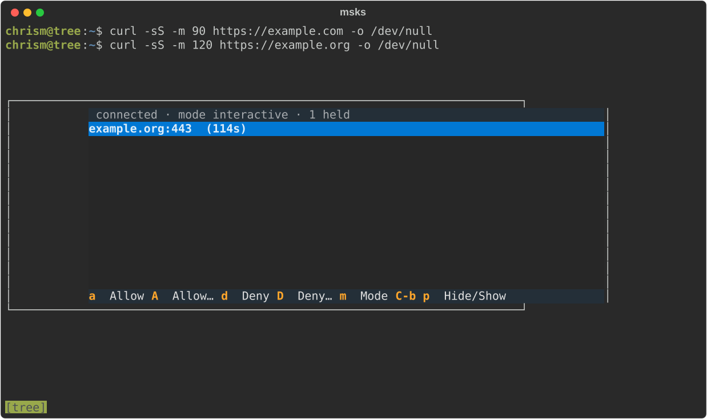
The app lists every hold the workspace carries, destination and time
remaining per row, with the arrow keys moving the selection. a allows
until restart and d denies the selected hold. The uppercase twins A and
D pick a duration for their verdict (Enter picks, Escape cancels). m
switches the workspace's egress mode. The picker offers allow, static,
and interactive with the current mode highlighted (Enter picks, Escape or
q cancels).
Picking static while nothing is effectively allowed asks the
empty-static question first, the same confirmation the consent page asks.
The switch goes through the same endpoint msks egress mode uses. The
status line shows the current mode beside the connection state, and a
completed switch flashes its effect there (in effect now, or takes effect
at next start for a stopped workspace). A switch the daemon refuses states
its reason on the same line. A hold leaves the list the moment the daemon
resolves it (a verdict from another decider window, or the hold's own
timeout). The popup viewer hides itself when the list empties.
A hold arriving with the popup closed raises a popup viewer over the shell
that attaches to the hidden session. The bindings map runs along the popup's
bottom edge: the verdict keys, the mode switch, and the hide/show entry.
q, Esc, or C-b hide the viewer. The decider keeps running, its queue
keeps living, and C-b p brings the popup back. A popup the app raised
returns the same way on the next hold. The session ends with its window, and
the decider registration ends with the server. It works with any terminal
that runs a command: put your terminal and its command flag in
terminal_open_cmd, and msks-term-popup right after it (tmux 3.2 or newer
must be on PATH):
On macOS, an open-opened window resolves commands on a fresh login PATH, and
msks-setup-macos-host links both client commands there. tmux comes
from that PATH the same way. The Linux forms need the same: the window resolves
msks-term-popup on its own PATH, and msks-setup-debian-host and
msks-setup-fedora-host link it beside msks at /usr/local/bin.
The popup viewer keeps its own attach to the hidden session. A hold that arrives while it is open is already in the list. Verdicts posted from it go through the same REST contract as the consent page. A post that cannot complete (the request resolved in another decider window while the verdict was in flight) reports the reason on the popup's status line.
The session's status bar shows the workspace: the launch resolves the
workspace's name and pins it to the bar's left side ([project-x]). The id
stands in whenever the lookup fails (the daemon down, the workspace gone, the
wait run out), and shell stands for a plain shell. The window list after the
label stays empty.
The bar's right side carries the egress mode beside the popup key (#764), as
interactive · C-b p popup. The key hint lands at launch. The decider app
fills the mode in front of it when its first rules frame lands, and updates it
on every change whatever surface decided it. Every workspace carries a mode.
A workspace created without egress reads allow. A window with no workspace
(a plain shell) ships neither half: no decider stands behind it, and C-b p
stays stock tmux's own key.
The hidden consent session runs on the launch's own socket, one small
server per window. The app retires when the window has been gone for a
while, taking the session and the server with it. The window's own hold
flags (konsole --hold, xterm's -hold) keep the window open after
the session ends, as they do for a plain shell window.
The tmux pane keeps 10000 lines of scrollback and takes the mouse wheel. Wheel
up scrolls into the pane's history, and wheel down scrolls back toward the live
output. Reaching the bottom (or pressing q) returns to the plain shell. The
keyboard path covers the same history: Ctrl-b [ (or Ctrl-b PageUp) opens
tmux's copy mode, where the arrow keys and PageUp/PageDown move through
it. Shift-PageUp and Shift-PageDown page through it too, one page per
press, entering copy mode on the way up and returning to the shell at the
bottom.
A plain drag selects text in tmux's buffer and copies it. The copy lands in tmux's paste buffer and in the system clipboard, so a paste in another window delivers the selection just made. The clipboard half is sent as an OSC 52 write, which the outer terminal must take: Konsole builds since 2024, kitty, foot, wezterm, ghostty, and alacritty do. VTE terminals (gnome-terminal, Ptyxis) leave the sequence untouched, so there a plain drag copies into tmux's own buffer only. Holding Shift while dragging selects the terminal's native text in every terminal (most terminals hand Shift drags to their own selection). A consent popup raised while the pane is scrolled still takes its verdict keys: the popup overlays the scrolled pane, and the next keypress answers it.